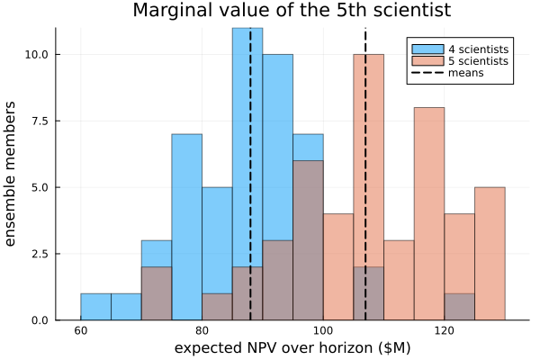

What is the marginal eNPV of the Nth scientist?
The number. On the portfolio modeled below, the fifth full-time scientist is worth about $19M in expected NPV (≈ $19M ± $2.5M over a 48-month horizon, from a 48-member seeded ensemble at capacity 4 vs 5). That is the shadow price of the binding resource: the extra expected value the whole system produces when one more scientist is available at the margin.
The decision rule that falls out of it. Hire the fifth scientist iff their fully-loaded cost over the horizon is below the shadow price of ≈ $19M. A senior R&D scientist loaded at even $1–2M/yr clears that bar comfortably — so on this portfolio the hire is value-accretive, and the marginal scientist is worth far more than their salary line suggests.
Why a spreadsheet cannot produce this number. A staffing spreadsheet prices a scientist at their accounting cost. But under contention the value of a resource is not what it costs — it is what the system does with it at the margin: which trials it unblocks, which queued programs it lets advance, which launches it pulls forward. That marginal system effect is a property of the whole timed, stochastic, resource-contended portfolio, and it is what the model computes below.
The rest of this study is how we got the number: the portfolio model and why the scientist bench genuinely binds (§1), the N-vs-N+1 ensemble comparison that reads off the shadow price (§2), the execution map that shows which resource binds and who wins the contention (§3), and what it means for the staffing decision (§4).
using ReactiveDynamics
using AlgebraicAgents # inners / getagent — read the live token population
using Statistics # ensemble reductions
using Printf # aligned reporting
using Plots # inline figures
RD = ReactiveDynamicsReactiveDynamicsA tiny helper so a raw Graphviz SVG string renders as an inline image in the built page (its show(::MIME"image/svg+xml") prints the SVG). This is the same device the visualization tour uses for the execution map in §3.
struct RawSVG
s::String
end
Base.show(io::IO, ::MIME"image/svg+xml", x::RawSVG) = print(io, x.s)1. The model: a two-program portfolio contending for one scientist bench
We model a small R&D portfolio with two therapeutic programs — an oncology franchise and an immunology franchise — that share a single finite pool of scientists. Each program has a steady intake of candidate assets and runs each candidate through a trial that, on success, launches. The scarce, contended resource is the scientist bench; the money to run trials is not the constraint here. That is deliberate: we want a study where people, not cash, bind — so the marginal question is "one more scientist," and the shadow price is a hiring number.
Three modeling choices make the scientist bench the true bottleneck:
- Each trial holds scientists as a
@conservedresource: a running trial occupies its scientists for the trial'scycletimeand returns them intact at completion. A conserved pool is reusable capacity, not consumed mass — exactly how headcount behaves. - Trial budget is metered as a
@rateresource (drawn per ongoing tick over the cycle) out of an ample pool, so budget is a real cost on the ledger but never the binding constraint. - The two trials carry different
priorityweights. When more trials are ready than the bench can staff in a tick, the priority-weighted allocator rations the scientists in proportion to priority. We give oncology the higher priority (protecting the higher-strategic-value franchise), so under contention oncology is staffed first and immunology waits — a queue we will see in §3.
A structured token carries each candidate's program (:Onc/:Immuno), lifecycle phase, and value; the trial @selects a program's active candidates and @advances a survivor to :Launched, emitting a plain launch product that carries the reward. We define the token kind in ReactiveDynamics' own scope via the @register/@aagent idiom (the engine's selection/advancement machinery must see the type) and map its kind name to a constructor through a registry.
@register begin
@aagent BaseStructuredToken AbstractStructuredToken struct SciProjectToken
program::Symbol # :Onc or :Immuno — which franchise this candidate belongs to
phase::Symbol # :Active while in trial, :Launched once it succeeds
value::Float64 # a descriptor field (logged per tick)
end
function SciProjectToken(program, phase, value)
return SciProjectToken(
"PP" * string(rand(1:(10^9))), # unique token name
:Project, # kind tag (one kind for both programs)
nothing, # bound_transition (engine-set)
Tuple{Symbol, Float64, ReactiveDynamics.Transition}[], # past_bonds history
program, phase, value,
)
end
endReactiveDynamics.SciProjectTokenOpt this kind into the per-tick trajectory log (records these fields each tick, RNG-free).
RD.log_token_fields(t::RD.SciProjectToken) = (; program = t.program, phase = t.phase, value = t.value)The registry resolves the kind name :Project to a real constructor, so a declarative population (and, downstream, a serialized model) can reference the kind BY NAME without carrying any code.
const REGISTRY = Dict{Symbol, Any}(
:Project => (state, f) -> RD.SciProjectToken(
get(f, :program, :Onc), get(f, :phase, :Active), get(f, :value, 100.0)
),
)Dict{Symbol, Any} with 1 entry:
:Project => #2The model is a builder function parameterized by the scientist headcount fte. This is the idiomatic way to vary a model: macro arguments (rates, probability, and the @prob_meta horizon) are literal — evaluated in module scope — so a headcount that varies across the study cannot be a macro argument. Instead we author the network with literal attributes and set the scarce resource's initial pool (specInitVal), the budget cost, and the launch reward on the store by name. Reward is carried by a plain launch product species so it realizes ONLY at a successful launch — not at candidate intake — which keeps expected NPV tracking launches cleanly.
Units: pool quantities are in $k; the launch product carries a $4,000k = $4M reward per launch, and we report expected NPV in $M. We discount monthly ticks at an 8% annual rate.
function portfolio_model(; fte)
net = @reaction_network begin
# steady intake of candidate assets into each franchise (genesis on the RHS)
@deterministic(1.5), ∅ --> @structured(:Project, program = :Onc, phase = :Active, value = 100.0),
name => intake_onc
@deterministic(1.5), ∅ --> @structured(:Project, program = :Immuno, phase = :Active, value = 100.0),
name => intake_imm
# oncology trial — HIGHER priority: staffed first when the bench is contended
@deterministic(4.0),
@select(Project, program == :Onc && phase == :Active) +
1 * @conserved(scientist) + 20 * @rate(budget) --> @advance(phase, :Launched) + launch,
name => trial_onc, cycletime => 4.0, probability => 0.55, priority => 3.0
# immunology trial — LOWER priority: waits behind oncology under contention
@deterministic(4.0),
@select(Project, program == :Immuno && phase == :Active) +
1 * @conserved(scientist) + 20 * @rate(budget) --> @advance(phase, :Launched) + launch,
name => trial_imm, cycletime => 4.0, probability => 0.55, priority => 1.0
end
RD.register_structured_species!(net, :Project)
si = findfirst(==(:scientist), net[:, :specName])
net[si, :specInitVal] = Float64(fte) # the scarce, contended resource — the study's lever
bi = findfirst(==(:budget), net[:, :specName])
net[bi, :specInitVal] = 1.0e9 # deep budget pool ⇒ money never binds here
net[bi, :specCost] = 1.0 # but budget burn is a real ledger cost
li = findfirst(==(:launch), net[:, :specName])
net[li, :specInitVal] = 1.0 # nonzero so the launch tally isn't flagged as a "starved" pool
net[li, :specReward] = 4000.0 # $4M realized per successful launch (credited on production, not stock)
@prob_meta net tspan = 48 dt = 1.0 # a 48-month horizon, monthly ticks
return net
endportfolio_model (generic function with 1 method)A member builder: a fixed opening portfolio of three active candidates per franchise, seeded.
function build_prob(seed; fte)
pop = vcat(
[RD.SciProjectToken(:Onc, :Active, 100.0) for _ in 1:3],
[RD.SciProjectToken(:Immuno, :Active, 100.0) for _ in 1:3],
)
return ReactionNetworkProblem(portfolio_model(; fte = fte); seed = seed, registry = REGISTRY, population = pop)
endbuild_prob (generic function with 1 method)Expected NPV is a pure post-processing reduction over the run's financial ledger: discounted rewards minus discounted costs, in $M (the engine does no discounting itself). Monthly ticks are discounted at 8% annual.
enpv(p; annual = 0.08) = sum(
(
row[1] == :valuation_reward ? row[3] :
row[1] == :valuation_cost ? -row[3] : 0.0
) / (1 + annual)^(row[2] / 12) / 1000
for row in p.log; init = 0.0
)enpv (generic function with 1 method)Live-token helpers: the launched count per franchise, and the still-waiting (queued) count.
livetokens(p) = collect(values(AlgebraicAgents.inners(AlgebraicAgents.getagent(p, "structured"))))
n_launched(p, prog) = count(t -> t.program == prog && t.phase == :Launched, livetokens(p))
n_waiting(p, prog) = count(t -> t.program == prog && t.phase == :Active, livetokens(p))n_waiting (generic function with 1 method)Confirm the bench genuinely binds. Before comparing capacities we check that the scientist pool actually starves — otherwise the marginal value of a scientist is ≈ 0 and the study is pointless. We run one member at four scientists and read the pool's trough and the queue it leaves behind.
prob4 = build_prob(1; fte = 4)
simulate(prob4)
sci = prob4.sol[!, "scientist"]
println("Scientist pool over the run : start ", Int(sci[1]), " → trough ", round(minimum(sci); digits = 1), " → end ", round(sci[end]; digits = 1))
println(" ⇒ trough at 0 means the bench is fully committed — a genuinely binding resource.")
println("Launches by franchise : Onc ", n_launched(prob4, :Onc), " Immuno ", n_launched(prob4, :Immuno))
println("Still-waiting candidates : Onc ", n_waiting(prob4, :Onc), " Immuno ", n_waiting(prob4, :Immuno))
println("Expected NPV of this run : \$", round(enpv(prob4); digits = 1), "M")Scientist pool over the run : start 4 → trough 0.0 → end 0.0
⇒ trough at 0 means the bench is fully committed — a genuinely binding resource.
Launches by franchise : Onc 21 Immuno 7
Still-waiting candidates : Onc 31 Immuno 45
Expected NPV of this run : $93.4MThe bench runs to a trough of zero and leaves a deep queue of candidates that never got staffed — the signature of a binding constraint. And the priority split is already visible: oncology, the higher-priority franchise, launches far more than immunology, which waits behind it. Both facts are what make the marginal scientist worth measuring.
2. The shadow price: an N-vs-N+1 ensemble comparison
A single run is one draw of a stochastic process; the shadow price is a difference of expected values, so we need an ensemble at each capacity. ensemble(build; nseed, root_seed) runs nseed members, member k seeded deterministically from hash((root_seed, k)) — so the two arms are compared on the same seed stream and member k is reproducible regardless of how many members we run or in what order.
We build one arm at four scientists and one at five, then read the shadow price of the fifth with treatment_effect(baseline, deal, metric), which returns the difference of mean eNPV with its unpaired standard error. Keeping each arm to a few dozen members keeps the build fast.
ens4 = ensemble(s -> (p = build_prob(s; fte = 4); simulate(p); p); nseed = 48, root_seed = 2026)
ens5 = ensemble(s -> (p = build_prob(s; fte = 5); simulate(p); p); nseed = 48, root_seed = 2026)
shadow = treatment_effect(ens4, ens5, enpv)
@printf("Expected NPV over the 48-month horizon (48-member ensembles, in \$M):\n")
@printf(" 4 scientists : \$%.1fM\n", shadow.baseline)
@printf(" 5 scientists : \$%.1fM\n", shadow.deal)
@printf(" shadow price of #5 : +\$%.1fM (± \$%.1fM SE)\n", shadow.delta, shadow.se)Expected NPV over the 48-month horizon (48-member ensembles, in $M):
4 scientists : $88.0M
5 scientists : $107.0M
shadow price of #5 : +$19.0M (± $2.5M SE)The standard error sits well below the effect, so this is a real marginal gain, not ensemble noise. The two eNPV distributions make the shift visible — the whole five-scientist distribution sits to the right of the four-scientist one:
d4 = [enpv(m) for m in ens4.members]
d5 = [enpv(m) for m in ens5.members]
histogram(
d4; bins = 15, alpha = 0.5, label = "4 scientists", xlabel = "expected NPV over horizon (\$M)",
ylabel = "ensemble members", title = "Marginal value of the 5th scientist",
)
histogram!(d5; bins = 15, alpha = 0.5, label = "5 scientists")
vline!([mean(d4), mean(d5)]; label = "means", lw = 2, color = :black, ls = :dash)
The shadow price is not the scientist's cost and not a fixed "value per head." It is the system's marginal response: adding the fifth scientist relieves the contended bench just enough to staff trials that would otherwise have queued, and the expected NPV of the launches that unblocks is ≈ $19M. Sweeping capacity would trace a diminishing marginal curve — each further scientist is worth less as the bench stops binding — which is precisely the curve a static per-head cost cannot represent.
3. The hero visual: which resource binds, and who wins the contention
The number tells us a resource binds; the execution map shows which one and how the contention resolves. It is built in three layers, each usable alone:
network_graph(prob)— the pure Petri-net structure: species (places), transitions, and the arcs between them, with stoichiometry and modality. It runs on a copy and never perturbs the run.draw_network(prob)— renders that structure to an image via Graphviz (authoring-time documentation; no run needed).exec_map(prob; highlight)— decorates the structure with run statistics: places that ran to a trough are painted as starved (the binding resource, in gold), and a@selectcohort's path through the net is drawn as thick arcs — here, the launched cohort's route through the trials.
We render the execution map for the four-scientist run, highlighting the launched cohort. Rendering is best-effort: if no Graphviz backend is available at build time we fall back to the DOT source.
launched_cohort = RD.TokenPredicate(:Project, [RD.Clause(:phase, :(==), QuoteNode(:Launched))])
g = network_graph(prob4)
println("Execution-map structure:")
println(" places (species) : ", [s.name for s in g.species])
println(" transitions : ", [t.name for t in g.transitions])
starved = [s for (s, v) in RD._pool_troughs(prob4) if v <= 0.0]
println(" starved place(s) : ", isempty(starved) ? "none" : starved, " (painted gold — the binding resource)")
hero = try
RawSVG(exec_map(prob4; highlight = launched_cohort, format = "svg"))
catch err
@warn "exec_map: no Graphviz backend at build time — falling back to DOT source" exception = err
nothing
end
hero === nothing ? Text(to_graphviz(g; highlight_species = starved)) : hero
-->
<!-- Title: reactive_network Pages: 1 -->
<svg width="647pt" height="346pt"
viewBox="0.00 0.00 647.34 345.87" xmlns="http://www.w3.org/2000/svg" xmlns:xlink="http://www.w3.org/1999/xlink">
<g id="graph0" class="graph" transform="scale(1 1) rotate(0) translate(4 341.87)">
<title>reactive_network</title>
<polygon fill="white" stroke="transparent" points="-4,4 -4,-341.87 643.34,-341.87 643.34,4 -4,4"/>
<!-- Project -->
<g id="node1" class="node">
<title>Project</title>
<ellipse fill="none" stroke="black" cx="34.5" cy="-112.87" rx="28.75" ry="28.75"/>
<ellipse fill="none" stroke="black" cx="34.5" cy="-112.87" rx="32.74" ry="32.74"/>
<text text-anchor="middle" x="34.5" y="-110.67" font-family="Times,serif" font-size="9.00">Project</text>
</g>
<!-- trial_onc -->
<g id="node7" class="node">
<title>trial_onc</title>
<polygon fill="none" stroke="black" points="370.46,-77.87 313.46,-77.87 313.46,-41.87 370.46,-41.87 370.46,-77.87"/>
<text text-anchor="middle" x="341.96" y="-57.67" font-family="Times,serif" font-size="9.00">trial_onc</text>
</g>
<!-- Project&%2345;>trial_onc -->
<g id="edge3" class="edge">
<title>Project&%2345;>trial_onc</title>
<path fill="none" stroke="black" stroke-width="3" d="M57.56,-88.76C66.33,-82.7 76.75,-77.14 87,-73.87 160.83,-50.31 252.43,-48.21 302.98,-52.12"/>
<polygon fill="black" stroke="black" stroke-width="3" points="302.85,-55.63 313.13,-53.04 303.48,-48.65 302.85,-55.63"/>
</g>
<!-- trial_imm -->
<g id="node8" class="node">
<title>trial_imm</title>
<polygon fill="none" stroke="black" points="371.96,-158.87 311.96,-158.87 311.96,-122.87 371.96,-122.87 371.96,-158.87"/>
<text text-anchor="middle" x="341.96" y="-138.67" font-family="Times,serif" font-size="9.00">trial_imm</text>
</g>
<!-- Project&%2345;>trial_imm -->
<g id="edge8" class="edge">
<title>Project&%2345;>trial_imm</title>
<path fill="none" stroke="black" stroke-width="3" d="M67.09,-107.17C73.67,-107.6 80.56,-108.26 87,-108.87 162.92,-115.99 251.65,-123.94 301.58,-131.12"/>
<polygon fill="black" stroke="black" stroke-width="3" points="301.21,-134.61 311.62,-132.64 302.26,-127.69 301.21,-134.61"/>
</g>
<!-- scientist -->
<g id="node2" class="node">
<title>scientist</title>
<ellipse fill="gold" stroke="black" cx="34.5" cy="-197.87" rx="32.16" ry="32.16"/>
<text text-anchor="middle" x="34.5" y="-195.67" font-family="Times,serif" font-size="9.00">scientist</text>
</g>
<!-- scientist&%2345;>trial_onc -->
<g id="edge4" class="edge">
<title>scientist&%2345;>trial_onc</title>
<path fill="none" stroke="darkgreen" d="M57.6,-174.66C76.89,-155.7 106.49,-129.56 137,-113.87 191.05,-86.07 260.73,-71.62 303.06,-64.89"/>
<polygon fill="darkgreen" stroke="darkgreen" points="303.85,-68.31 313.21,-63.35 302.79,-61.39 303.85,-68.31"/>
</g>
<!-- scientist&%2345;>trial_imm -->
<g id="edge9" class="edge">
<title>scientist&%2345;>trial_imm</title>
<path fill="none" stroke="darkgreen" d="M66.89,-193.79C82.58,-191.64 101.83,-188.84 119,-185.87 183.34,-174.73 257.61,-159.11 301.85,-149.5"/>
<polygon fill="darkgreen" stroke="darkgreen" points="302.59,-152.92 311.62,-147.37 301.1,-146.08 302.59,-152.92"/>
</g>
<!-- budget -->
<g id="node3" class="node">
<title>budget</title>
<ellipse fill="none" stroke="black" cx="34.5" cy="-28.87" rx="28.74" ry="28.74"/>
<text text-anchor="middle" x="34.5" y="-26.67" font-family="Times,serif" font-size="9.00">budget</text>
</g>
<!-- budget&%2345;>trial_onc -->
<g id="edge5" class="edge">
<title>budget&%2345;>trial_onc</title>
<path fill="none" stroke="%23666666" d="M63.33,-24.18C79.57,-22.04 100.45,-20.29 119,-21.87 184.28,-27.41 259.19,-41.98 303.17,-51.38"/>
<polygon fill="%23666666" stroke="%23666666" points="302.61,-54.84 313.12,-53.54 304.09,-48 302.61,-54.84"/>
<text text-anchor="middle" x="103" y="-25.67" font-family="Times,serif" font-size="14.00">20.0</text>
</g>
<!-- budget&%2345;>trial_imm -->
<g id="edge10" class="edge">
<title>budget&%2345;>trial_imm</title>
<path fill="none" stroke="%23666666" d="M58.81,-44.53C78.83,-57.39 108.83,-75.32 137,-86.87 192.3,-109.53 259.97,-125.24 301.77,-133.66"/>
<polygon fill="%23666666" stroke="%23666666" points="301.33,-137.14 311.82,-135.64 302.68,-130.27 301.33,-137.14"/>
<text text-anchor="middle" x="103" y="-81.67" font-family="Times,serif" font-size="14.00">20.0</text>
</g>
<!-- launch -->
<g id="node4" class="node">
<title>launch</title>
<ellipse fill="none" stroke="black" cx="611.63" cy="-99.87" rx="27.93" ry="27.93"/>
<text text-anchor="middle" x="611.63" y="-97.67" font-family="Times,serif" font-size="9.00">launch</text>
</g>
<!-- intake_onc -->
<g id="node5" class="node">
<title>intake_onc</title>
<polygon fill="none" stroke="black" points="67.5,-283.87 1.5,-283.87 1.5,-247.87 67.5,-247.87 67.5,-283.87"/>
<text text-anchor="middle" x="34.5" y="-263.67" font-family="Times,serif" font-size="9.00">intake_onc</text>
</g>
<!-- @structured :Project program = :Onc phase = :Active value = 100.0 -->
<g id="node9" class="node">
<title>@structured :Project program = :Onc phase = :Active value = 100.0</title>
<ellipse fill="none" stroke="black" cx="341.96" cy="-265.87" rx="193.98" ry="18"/>
<text text-anchor="middle" x="341.96" y="-263.67" font-family="Times,serif" font-size="9.00">@structured :Project program = :Onc phase = :Active value = 100.0</text>
</g>
<!-- intake_onc&%2345;>@structured :Project program = :Onc phase = :Active value = 100.0 -->
<g id="edge1" class="edge">
<title>intake_onc&%2345;>@structured :Project program = :Onc phase = :Active value = 100.0</title>
<path fill="none" stroke="black" d="M67.61,-265.87C85.96,-265.87 110.69,-265.87 137.8,-265.87"/>
<polygon fill="black" stroke="black" points="137.89,-269.37 147.89,-265.87 137.89,-262.37 137.89,-269.37"/>
</g>
<!-- intake_imm -->
<g id="node6" class="node">
<title>intake_imm</title>
<polygon fill="none" stroke="black" points="69,-337.87 0,-337.87 0,-301.87 69,-301.87 69,-337.87"/>
<text text-anchor="middle" x="34.5" y="-317.67" font-family="Times,serif" font-size="9.00">intake_imm</text>
</g>
<!-- @structured :Project program = :Immuno phase = :Active value = 100.0 -->
<g id="node10" class="node">
<title>@structured :Project program = :Immuno phase = :Active value = 100.0</title>
<ellipse fill="none" stroke="black" cx="341.96" cy="-319.87" rx="204.92" ry="18"/>
<text text-anchor="middle" x="341.96" y="-317.67" font-family="Times,serif" font-size="9.00">@structured :Project program = :Immuno phase = :Active value = 100.0</text>
</g>
<!-- intake_imm&%2345;>@structured :Project program = :Immuno phase = :Active value = 100.0 -->
<g id="edge2" class="edge">
<title>intake_imm&%2345;>@structured :Project program = :Immuno phase = :Active value = 100.0</title>
<path fill="none" stroke="black" d="M69.06,-319.87C84.65,-319.87 104.61,-319.87 126.62,-319.87"/>
<polygon fill="black" stroke="black" points="126.87,-323.37 136.87,-319.87 126.87,-316.37 126.87,-323.37"/>
</g>
<!-- trial_onc&%2345;>Project -->
<g id="edge6" class="edge">
<title>trial_onc&%2345;>Project</title>
<path fill="none" stroke="black" d="M313.13,-63.97C265.55,-66.02 166.08,-66.63 87,-91.87 82.9,-93.18 78.77,-94.85 74.73,-96.7"/>
<polygon fill="black" stroke="black" points="72.94,-93.69 65.52,-101.25 76.03,-99.96 72.94,-93.69"/>
</g>
<!-- trial_onc&%2345;>launch -->
<g id="edge7" class="edge">
<title>trial_onc&%2345;>launch</title>
<path fill="none" stroke="black" d="M370.6,-64C419.06,-71.24 519.37,-86.23 573.71,-94.35"/>
<polygon fill="black" stroke="black" points="573.53,-97.86 583.94,-95.88 574.57,-90.94 573.53,-97.86"/>
</g>
<!-- trial_imm&%2345;>Project -->
<g id="edge11" class="edge">
<title>trial_imm&%2345;>Project</title>
<path fill="none" stroke="black" d="M311.62,-143.9C264.34,-143.08 168.32,-134.5 87,-126.87 83.29,-126.52 79.44,-126.15 75.58,-125.75"/>
<polygon fill="black" stroke="black" points="75.79,-122.25 65.45,-124.55 74.97,-129.2 75.79,-122.25"/>
</g>
<!-- trial_imm&%2345;>launch -->
<g id="edge12" class="edge">
<title>trial_imm&%2345;>launch</title>
<path fill="none" stroke="black" d="M372.22,-136.82C414.87,-130.86 496.6,-119.2 565.92,-107.87 568.6,-107.43 571.37,-106.96 574.15,-106.49"/>
<polygon fill="black" stroke="black" points="574.93,-109.91 584.17,-104.74 573.72,-103.01 574.93,-109.91"/>
</g>
</g>
</svg>)
Read the map: the scientist place is the one painted gold — the pool that ran to a trough, the resource the whole portfolio is starved of. Budget, by contrast, never starves (the @rate draw comes out of a deep pool), so it is not the constraint despite being a real cost. The thick arcs trace the launched cohort's path through the two trials, and the arc weights make the priority split concrete: with the bench contended, oncology's higher priority claims scientists first, so its trial fires more and immunology's queue grows. That is the picture behind the number — the marginal scientist is valuable because the gold pool binds, and their value flows to whichever trial the allocator staffs next.
4. What this means for the decision
Hire the fifth scientist iff their fully-loaded cost over the 48-month horizon is below the shadow price of ≈ $19M. On this portfolio that is a clear yes: a scientist loaded at even a few $M per year over four years is well under the marginal value they unlock, so the hire is value-accretive rather than a cost to be minimized.
The transferable point is the kind of number this is. The scientist's accounting cost is a line item; their shadow price is a system property — the expected NPV of the launches one more unit of the binding resource lets the portfolio pull forward, net of the extra trial spend, across every seed. It exists only because the bench genuinely binds and the priority allocator has to choose whom to starve; relax the contention (add enough scientists) and the shadow price falls toward the accounting cost, which is exactly when hiring should stop. A capacity or hiring memo can take the ≈ $19M and its standard error directly, and the same machinery re-priced at capacity 5-vs-6, 6-vs-7, and so on traces the full diminishing-returns curve the headcount plan should follow.